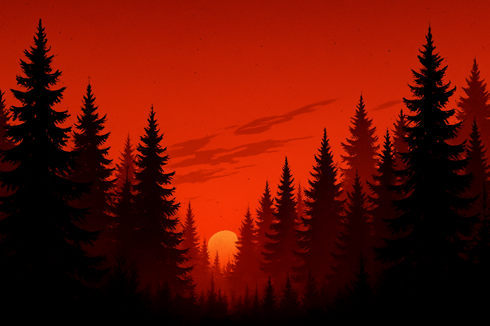

Echoes Through the Wood
A dark tale unfolds in the silence of the trees...
Chapter 1: The Whispering Pines
They say the trees speak when the wind is right. That night, it wasn’t just the wind...
Chapter 2: Footprints at Dusk
The trail was fading, but something—or someone—was just ahead, watching.
Chapter 3: The Forgotten Tower
Hidden behind the evergreens, the watchtower stood silent, a relic of a vanished guard.
The End?
The forest keeps its secrets well... but you’re not done listening, are you?